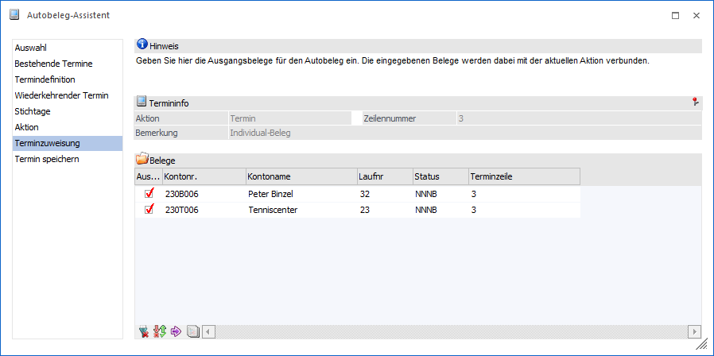
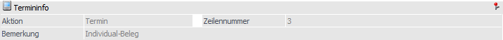
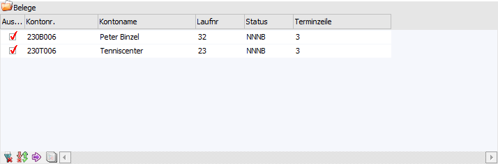
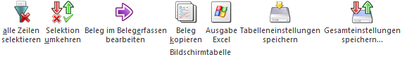

In der Terminzuweisung erfolgt die Zuweisung der Belege zu einem bestimmten Termin. Aufgrund dieser Termine und deren Zuweisung kann später u.a. die Ausgabe der Telefonliste erfolgen (siehe Kapitel Telefonverkauf).
Hinweis
Dieser Bereich wird nur bei der Terminart "Termin" angeboten.

Folgende Einstellungen und Information stehen in diesem Bereich zur Verfügung:
Termininfo

An dieser Stelle wird der aktuell gewählte Termin dargestellt. Alle weiteren Aktionen (z.B. Anwahl des Buttons "Start") und Änderungen erfolgt für diesen Termin.
Belege

Es werden alle Termine angezeigt, die die aktuelle Terminzeile als Aktionsplanzeile hinterlegt haben. Es können neue Zeilen erfasst werden, in dem Kundennummer und Laufnummer von bestehenden Belegen eingegeben werden.
Tabellenbuttons

Ø alle Zeilen selektieren
Mit dieser Funktion können alle Zeilen selektiert / aktiviert werden.
Ø Selektion umkehren
Durch Anwahl dieses Buttons werden alle aktivierten Datensätze deaktiviert bzw. alle deaktivierten Datensätze aktiviert.
Ø Beleg im Belegerfassen bearbeiten
Bei Anwahl dieses Buttons wird ein bestehender Beleg zur Bearbeitung in der Belegerfassung aufgerufen. Wenn in einer Zeile nur eine Kontonummer eingetragen ist, wird beim Druck des Buttons für dieses Konto ein neuer Beleg geladen und die Aktionsplanzeile im Register "Zusatz" mit dem aktuellen Termin vorbesetzt.
Ø Beleg kopieren
Beim Druck des Buttons "Beleg kopieren" wird das Fenster Beleg kopieren geöffnet und der selektierte Beleg als Ausgangsbeleg übernommen.
Ø Ausgabe Excel
Durch Anwahl des Buttons "Ausgabe Excel" wird der Inhalt der Tabelle an Microsoft Excel übergeben.
Ø Tabelleneinstellungen speichern
Die Spalten einer Tabelle können grundsätzlich an beliebige Positionen verschoben, bzw. in der Breite entsprechend angepasst werden. Durch Anwahl des Buttons "Tabelleneinstellungen speichern" werden die Einstellungen benutzerspezifisch gespeichert und bei dem nächsten Aufruf des Programmpunktes wieder vorgeschlagen.
Ø Gesamteinstellungen speichern…
Im Gegensatz zu "Tabelleneinstellungen speichern" können mit "Gesamteinstellungen speichern" mehrere Tabellenaufbauten gespeichert und nach Wunsch geladen werden. Zusätzlich werden Sonderfunktionen der Tabelle (z.B. "Spalte gruppieren") ebenfalls bei der Speicherung bedacht.